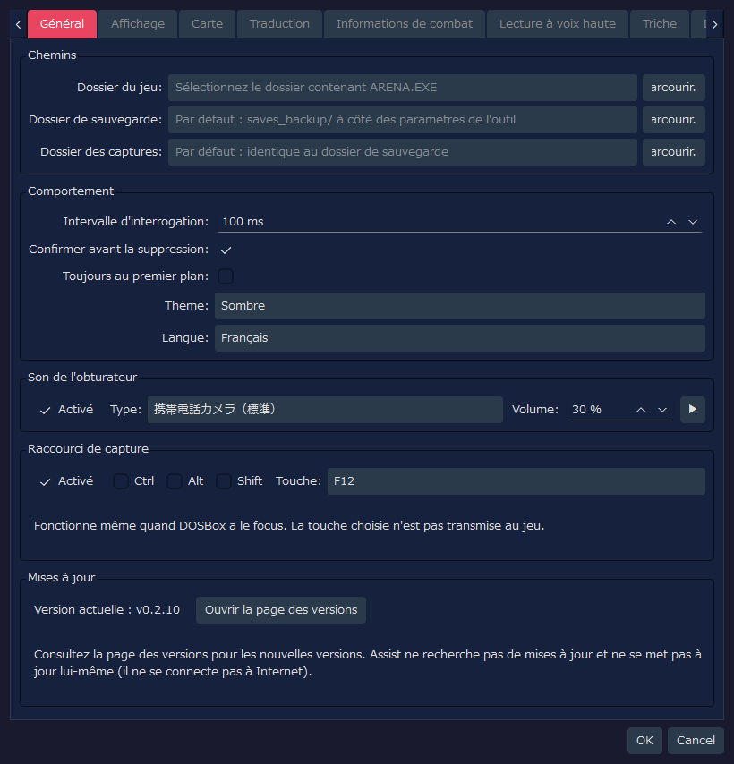
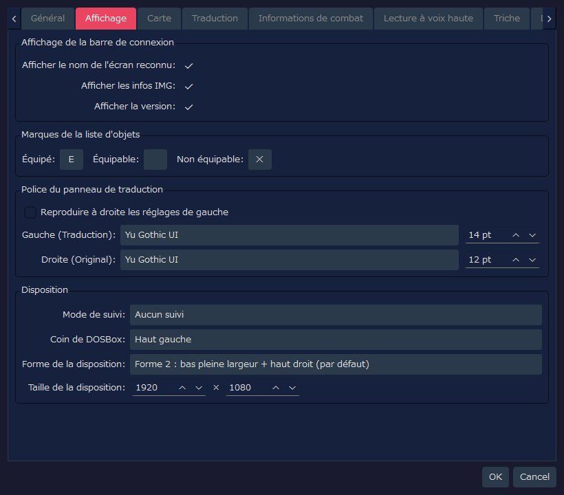
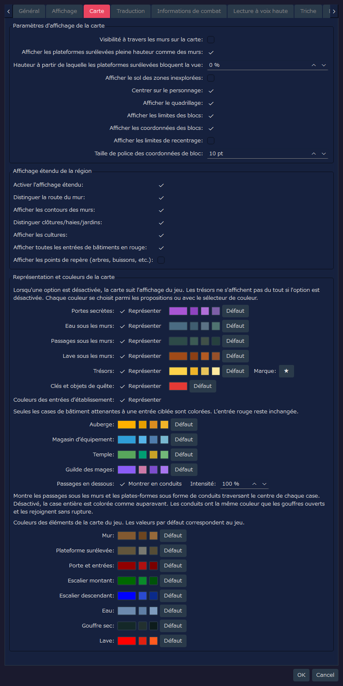
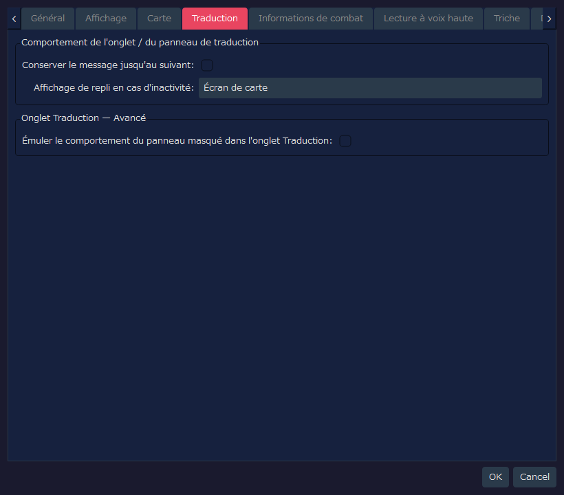
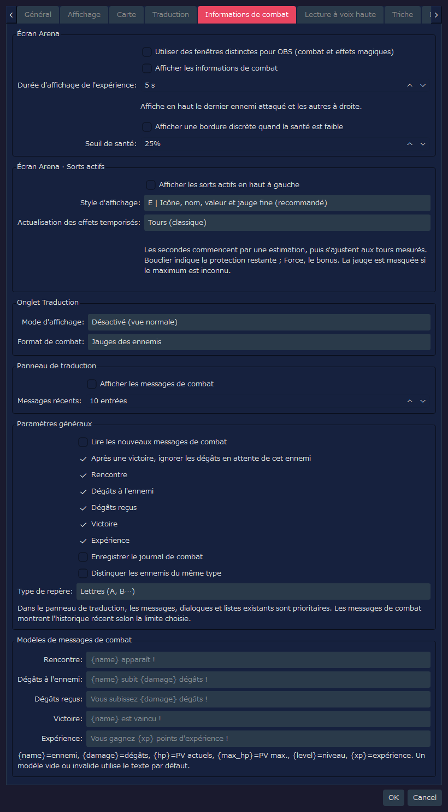
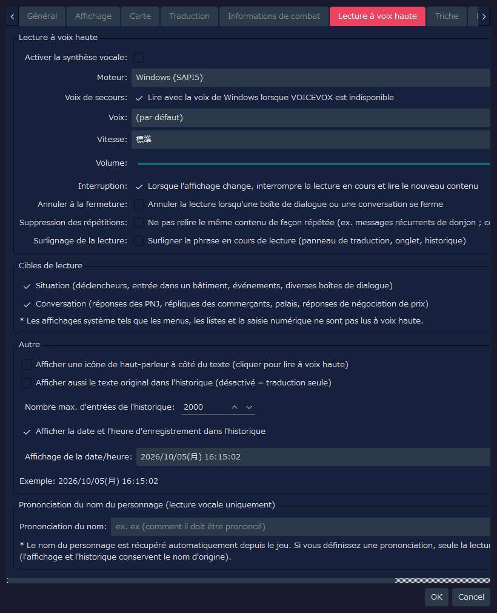
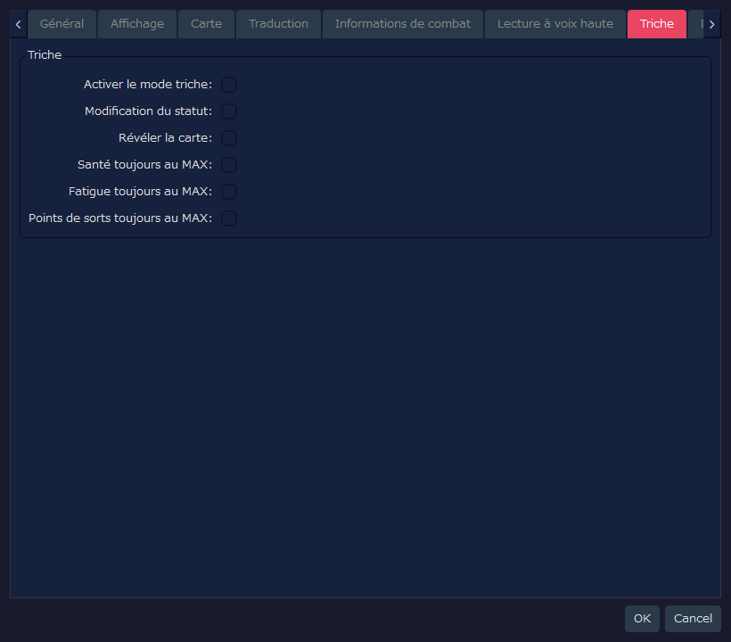
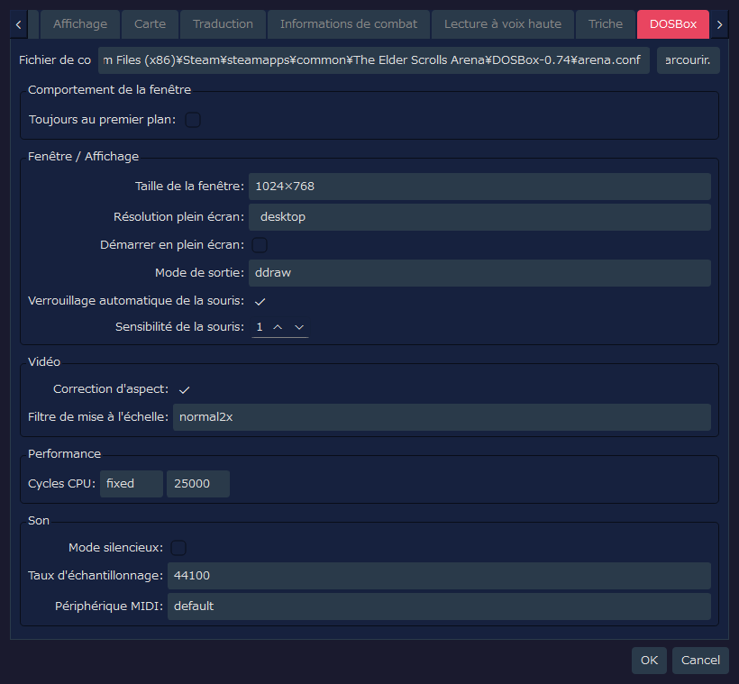

RTESArenaAssist — Paramètres (guide détaillé)
Cette page présente une capture de chaque onglet de la boîte de dialogue des paramètres de RTESArenaAssist, ainsi que l'explication de chaque élément de l'interface.
Les images ont été prises avec la boîte de dialogue des paramètres dans votre langue d'affichage, avec les réglages par défaut et le thème « Sombre » par défaut.
Les valeurs de l'onglet DOSBox reflètent non seulement le fichier de paramètres d'Assist, mais aussi le résultat de la lecture de l'arena.conf situé au chemin par défaut. Si l'arena.conf de votre environnement diffère, les valeurs affichées changent donc aussi.
Sommaire
Onglet Général
Cet onglet permet de régler les chemins, le comportement de base, le son de l'obturateur et le raccourci clavier de capture, et de vérifier votre version.

Chemins
| Libellé affiché | Valeur par défaut | Description |
|---|
Dossier du jeu: | Vide | Le dossier qui contient l'ARENA.EXE d'Arena et les fichiers de sauvegarde. Tant qu'il n'est pas défini, la gestion des sauvegardes et la lecture des données du jeu ne sont pas disponibles |
Dossier de sauvegarde: | Vide | Destination des sauvegardes de parties. Si elle est vide, le dossier saves_backup/ situé à côté du fichier de paramètres de l'outil est utilisé |
Dossier des captures: | Vide | Destination des captures d'écran. Si elle est vide, le même dossier que celui des sauvegardes est utilisé |
Parcourir... | - | Sélectionne chacun des dossiers |
Comportement
| Libellé affiché | Valeur par défaut | Description |
|---|
Intervalle d'interrogation: | 100 ms | Période de surveillance de l'écran de DOSBox et de l'état de la mémoire. La valeur par défaut est courte pour capter plus facilement les messages brefs |
Confirmer avant la suppression: | Activé | Affiche une boîte de dialogue de confirmation avant de supprimer des captures ou des sauvegardes |
Toujours au premier plan: | Désactivé | Affiche la fenêtre principale d'Assist devant les autres fenêtres |
Thème: | Sombre | Choisit le thème de couleurs de l'interface |
Langue: | Automatique (système) | Langue de l'interface. Si rien n'est défini, elle est déterminée automatiquement d'après la langue du système ; une modification est prise en compte après le redémarrage de l'application |
Son de l'obturateur
| Libellé affiché | Valeur par défaut | Description |
|---|
Activé | Activé | Joue un effet sonore quand une capture d'écran est enregistrée |
Type: | 携帯電話カメラ（標準） (appareil photo de téléphone, standard) | Le son d'obturateur joué. On peut choisir entre standard, version courte, double, aigus accentués et doux (les noms des sons s'affichent actuellement en japonais) |
Volume: | 30 % | Volume de lecture du son de l'obturateur |
▶ | - | Écoute le son d'obturateur sélectionné |
Raccourci de capture
Il suffit d'appuyer sur la touche pour enregistrer une capture, même quand la fenêtre du jeu (DOSBox) a le focus. Utilisez-le pour photographier un message qui disparaît au bout de quelques secondes.
| Élément | Valeur par défaut | Description |
|---|
Activé | Activé | Utilise le raccourci clavier pour les captures |
Ctrl / Alt / Shift | Désactivé | À activer pour combiner avec une touche de modification |
Touche: | F12 | La touche utilisée. On peut choisir F5 à F12, PrintScreen, Pause, ScrollLock, Insert, Home, End, PageUp, PageDown |
- La touche pressée n'est pas transmise au jeu. Les touches utilisées par le jeu ou par DOSBox (F1 / F3 / F4 / F8, Ctrl+F5 à F12, Alt+F12, Alt+Pause) ne peuvent pas être choisies
- Si une autre application utilise la même touche comme raccourci, le raccourci de cette application ne fonctionne pas tant que cette application est lancée. En choisissant une autre touche, les deux peuvent coexister
- Si la touche n'a pas pu être enregistrée, un message s'affiche dans la barre d'état. Vous pouvez alors toujours capturer avec le bouton appareil photo de la barre d'outils
Mises à jour
| Libellé affiché | Valeur par défaut | Description |
|---|
Version actuelle : | - | La version d'Assist que vous utilisez |
Ouvrir la page des versions | - | Ouvre dans le navigateur la page des versions d'Assist (la liste des Releases). C'est là qu'il faut vérifier s'il existe une nouvelle version |
Assist ne se connecte pas à Internet : il ne recherche pas de mises à jour et ne se met pas à jour automatiquement.
Onglet Affichage
Cet onglet permet de régler la barre de connexion, les marques d'équipement de la liste d'objets, la police du panneau de traduction et la disposition.

Affichage de la barre de connexion
| Libellé affiché | Valeur par défaut | Description |
|---|
Afficher le nom de l'écran reconnu: | Activé | Affiche dans la barre de connexion le nom de l'écran actuellement reconnu |
Afficher les infos IMG: | Activé | Affiche dans la barre de connexion les informations sur l'IMG détectée |
Afficher la version: | Activé | Affiche la version de l'application dans la barre de connexion et la barre d'état |
Marques de la liste d'objets
| Libellé affiché | Valeur par défaut | Description |
|---|
Équipé: | E | Marque d'un caractère affichée à gauche d'un objet équipé |
Équipable: | Vide | Marque des objets équipables. Elle est vide par défaut : rien n'est affiché |
Non équipable: | ✕ | Marque d'un caractère affichée à gauche d'un objet qui ne peut pas être équipé |
Police du panneau de traduction
| Libellé affiché | Valeur par défaut | Description |
|---|
Reproduire à droite les réglages de gauche | Désactivé | Activé, il applique au côté du texte original la même police et la même taille qu'au côté de la traduction |
Gauche (Traduction): | Police par défaut de l'application / 14 pt | Police et taille utilisées pour le texte traduit. Si aucun nom de police n'est enregistré, la police par défaut de l'application dans votre environnement est choisie |
Droite (Original): | Police par défaut de l'application / 12 pt | Police et taille utilisées pour le texte original anglais. La synchronisation étant désactivée, on peut les régler séparément du côté de la traduction |
Disposition
| Libellé affiché | Valeur par défaut | Description |
|---|
Mode de suivi: | Aucun suivi | Choisit si, lorsque DOSBox ou Assist est déplacé, l'autre le suit |
Coin de DOSBox: | Haut gauche | Le coin de l'écran qui sert de référence pour placer DOSBox lors d'une disposition ponctuelle ou en mode disposition |
Forme de la disposition: | Forme 2 : bas pleine largeur + haut droit (par défaut) | Forme de découpage entre DOSBox et la zone des panneaux d'Assist. La forme 2 est la disposition standard, qui utilise le haut droit et le bas pleine largeur |
Taille de la disposition: | 1920 x 1080 | Taille de la zone de travail entière en mode disposition |
Onglet Carte
Cet onglet permet de régler la carte d'exploration et l'affichage étendu de la région.

Paramètres d'affichage de la carte
| Libellé affiché | Valeur par défaut | Description |
|---|
Visibilité à travers les murs sur la carte: | Désactivé | Désactivé, la carte n'enregistre pas les zones inexplorées derrière un mur. Activé, le comportement est plus proche d'Arena d'origine et les zones derrière les murs sont aussi enregistrées |
Afficher les plateformes surélevées pleine hauteur comme des murs: | Activé | Affiche avec la couleur des murs les plateformes surélevées qui vont du sol au plafond. Seule la classification d'affichage change ; le blocage de la ligne de vue n'est pas affecté. Les plateformes surélevées qui n'atteignent pas la pleine hauteur restent affichées comme plateformes surélevées |
Hauteur à partir de laquelle les plateformes surélevées bloquent la vue: | 0 % | La hauteur du plafond valant 100 %, les plateformes surélevées dont le sommet atteint ou dépasse cette hauteur bloquent la ligne de vue sur la carte. À 0 %, toutes les plateformes surélevées bloquent la vue |
Afficher le sol des zones inexplorées: | Désactivé | Désactivé, seules les cases découvertes sont affichées avec la couleur du sol, ce qui cache la forme des zones inexplorées. Activé, toute la carte est affichée avec la couleur de fond parchemin |
Centrer sur le personnage: | Activé | Quand le personnage se déplace, la carte le suit automatiquement pour rester centrée sur lui. À l'arrêt, on peut la faire défiler à la main |
Afficher le quadrillage: | Activé | Affiche le quadrillage qui marque les limites des cases |
Afficher les limites des blocs: | Activé | Sur la carte d'une région, met en évidence les limites des blocs de 64 cases |
Afficher les coordonnées des blocs: | Activé | Affiche les coordonnées de chaque bloc sur la carte d'une région, pour aider à se repérer |
Afficher les limites de recentrage: | Désactivé | Affiche en pointillés les limites de recentrage de la carte d'une région. Affichage d'appoint pour l'étude des positions et la vérification |
Taille de police des coordonnées de bloc: | 10 pt | Taille des caractères des étiquettes de coordonnées des blocs |
Affichage étendu de la région
| Libellé affiché | Valeur par défaut | Description |
|---|
Activer l'affichage étendu: | Activé | Interrupteur principal de l'affichage étendu de la carte d'une région. Désactivé, l'affichage se rapproche de la carte automatique du jeu |
Distinguer la route du mur: | Activé | Dessine avec des couleurs différentes les routes où l'on peut passer et les parties infranchissables, comme les bâtiments et les murs |
Afficher les contours des murs: | Activé | Affiche les contours des murs et les terrains de type bordure |
Distinguer clôtures/haies/jardins: | Activé | Distingue par des lignes de raccord les terrains de type bordure : clôtures, haies, jardins, etc. |
Afficher les cultures: | Activé | Affiche les cultures, comme le maïs et les champs, avec une couleur ou une marque dédiée |
Afficher toutes les entrées de bâtiments en rouge: | Activé | Affiche aussi en rouge les entrées des maisons, des tavernes, des temples, des portes de la ville, etc. Les entrées des cryptes, des tours et des donjons sont affichées en rouge quel que soit ce réglage |
Afficher les points de repère (arbres, buissons, etc.): | Désactivé | Superpose des marques simplifiées pour les arbres, les buissons, les rochers, les tombes, les ruines, etc. Ils sont nombreux et rendent la carte difficile à lire : la valeur par défaut est donc « désactivé » |
Représentation et couleurs de la carte
La carte du jeu dessine sans les distinguer, par exemple, les passages qui passent sous un mur. Ici, vous réglez si ces éléments sont dessinés de façon distincte, ainsi que la couleur de chacun. Quand vous désactivez « Représenter » sur une ligne, l'élément revient au même affichage que la carte du jeu (pour les trésors, la désactivation n'affiche rien).
| Libellé affiché | Valeur par défaut | Description |
|---|
Portes secrètes: | Activé | Affiche avec une couleur dédiée les portes secrètes découvertes. Tant qu'elle n'est pas découverte, la porte reste un mur |
Eau sous les murs: | Activé | Affiche avec une couleur dédiée l'eau qui passe sous un mur. Elle n'est pas affichée tant que vous n'y avez pas réellement passé pour la révéler |
Passages sous les murs: | Activé | Affiche les passages qui passent sous un mur. Ils ne sont pas affichés tant que vous n'y avez pas réellement passé pour les révéler |
Lave sous les murs: | Activé | Affiche avec une couleur dédiée la lave qui passe sous un mur. Elle n'est pas affichée tant que vous n'y avez pas réellement passé pour la révéler |
Trésors: | Activé | Superpose une marque à l'endroit où vous avez obtenu un trésor. Le caractère de la marque se change dans le champ de droite. Quand « Révéler la carte » de l'onglet Triche est activé, tous les endroits où se trouve un trésor sont affichés, que vous l'ayez obtenu ou non |
Clés et objets de quête: | Activé | Parmi les trésors, affiche avec une autre couleur la marque des clés et des objets de quête. Désactivé, ils sont affichés avec la même couleur que les trésors. Rien n'est affiché si « Trésors » est désactivé |
Couleurs des entrées d’établissement: | Activé | Sur la carte d'une ville, remplace par une couleur propre à chaque établissement les cases de couleur de bâtiment attenantes à l'entrée d'une auberge, d'un magasin d'équipement, d'un temple ou d'une guilde des mages. La couleur de l'entrée rouge ne change pas. La couleur de chaque établissement se change dans les champs en dessous |
Passages en dessous: | Montrer en conduits / Intensité 100 % | Montre les passages sous les murs et les plateformes surélevées sous forme de conduits traversant le centre des cases. Désactivé, la case entière est colorée comme auparavant. La couleur du conduit est celle des gouffres ouverts, et il les rejoint sans rupture. En baissant l'Intensité, les conduits deviennent plus discrets |
Cliquez sur l'échantillon de couleur à droite de chaque élément pour choisir une couleur quelconque. Les petits boutons voisins proposent des couleurs candidates faciles à choisir, et Défaut rétablit la couleur d'origine. Les couleurs des éléments propres au jeu — mur, plateforme surélevée, porte et entrées, escalier (montant, descendant), eau, gouffre sec, lave — se changent de la même façon (par défaut, ce sont les couleurs du jeu).
Onglet Traduction
Cet onglet permet de régler les affichages d'appoint du panneau de traduction et de l'onglet Traduction.

Comportement de l'onglet / du panneau de traduction
| Libellé affiché | Valeur par défaut | Description |
|---|
Conserver le message jusqu'au suivant: | Désactivé | Précise si un message de déclencheur ou d'interaction avec un objet reste dans le panneau de traduction jusqu'à l'arrivée du message suivant |
Affichage de repli en cas d'inactivité: | Écran de carte | Choisit ce qui s'affiche sur toute la zone de l'onglet Traduction pendant l'exploration quand il n'y a pas de traduction. Par défaut, l'écran de carte est prioritaire |
Onglet Traduction — Avancé
| Libellé affiché | Valeur par défaut | Description |
|---|
Émuler le comportement du panneau masqué dans l'onglet Traduction: | Désactivé | Activé, les résultats de traduction et les messages de dialogue s'affichent dans l'onglet Traduction, comme lorsque le panneau de traduction est masqué. Réglage avancé destiné à la vérification |
Cet onglet permet de régler séparément où s'affichent le combat et les sorts actifs. Les nouvelles fonctions d'affichage, de lecture à voix haute et d'enregistrement sont désactivées par défaut. Les valeurs enregistrées par une ancienne version de développement sont conservées telles quelles. Les textes affichés sont disponibles en japonais, anglais, espagnol, allemand, français, italien et russe.

Écran Arena
| Élément | Valeur par défaut | Description |
|---|
Utiliser des fenêtres distinctes pour OBS (combat et effets magiques) | Désactivé | Réunit les informations de combat et les sorts actifs dans une seule fenêtre que l'on peut choisir avec la capture de fenêtre d'OBS |
Afficher les informations de combat | Désactivé | Affiche en haut de l'écran le dernier adversaire engagé qui est actuellement en vue, et à droite les autres ennemis rencontrés encore en vie, même hors de vue. On peut y vérifier la santé, la fatigue et les points de sort, ainsi que les dégâts infligés et les victoires. Les dégâts reçus s'affichent en bas de la zone d'exploration |
Durée d'affichage de l'expérience | 5 s | Affiche l'expérience en bas à droite au moment où elle est gagnée, et fait disparaître chaque encadré après le nombre de secondes indiqué. Si vous en gagnez de nouveau à la suite, les anciens encadrés sont repoussés vers la gauche (1 à 60 secondes) |
Afficher une bordure discrète quand la santé est faible | Désactivé | Quand la santé tombe à la proportion indiquée ou en dessous, fait clignoter doucement le bord de l'écran d'exploration. Peut être activé même si vous n'utilisez pas l'affichage des ennemis des informations de combat |
Seuil de santé | 25% | Proportion à partir de laquelle la bordure de santé faible commence à s'afficher (1 à 99 % de la santé maximale) |
L'affichage des dégâts reçus disparaît automatiquement environ 5 secondes après leur survenue. La vue des ennemis suit le même critère quel que soit le lieu. Si la carte ou les coordonnées ne sont pas déterminées, les ennemis ne sont pas affichés par déduction.
Pour enregistrer avec OBS, activez ce réglage, puis choisissez RTESArenaAssist オーバーレイ (le titre de la fenêtre s'affiche en japonais) dans « Capture de fenêtre », autorisez la transparence et superposez-le au-dessus de l'image du jeu. Les informations de combat et les sorts actifs apparaissent dans la même source.
Écran Arena · Sorts actifs
| Élément | Valeur par défaut | Description |
|---|
Afficher les sorts actifs en haut à gauche | Désactivé | Affiche l'état de Lumière, Bouclier, Renforcement de force, Résistance au feu et Lévitation |
Style d'affichage | E | À choisir entre A « Nom et valeur restante », B « Nom et jauge horizontale », C « Icône et jauge horizontale », D « Icône et ombre horaire », E « Icône, nom, valeur et jauge fine » et F « Pastille compacte » |
Actualisation des effets temporisés | Tours | Choisit si Lumière, Résistance au feu et Lévitation sont actualisés en tours (« Tours (classique) ») ou en secondes estimées, chaque seconde (« Secondes (estimées, chaque seconde) »). Les secondes sont corrigées d'après l'intervalle de progression mesuré dans le jeu ; si la vitesse de progression change, par exemple avec DETAIL, ce n'est donc pas forcément un multiple fixe |
Bouclier indique la protection restante, et Renforcement de force le bonus. Dans une connexion en cours de partie où le maximum ne peut pas être vérifié, la jauge peut être omise. L'affichage en secondes est approximatif ; la fin d'un effet est déterminée d'après l'état dans le jeu.
Informations de combat dans l'onglet Traduction
| Élément | Valeur par défaut | Description |
|---|
Mode d'affichage | Désactivé | À choisir entre : conserver l'affichage normal (« Désactivé (vue normale) ») / utiliser ensemble l'affichage normal et les informations de combat (« Combat et vue normale ») / afficher les informations de combat en plein écran (« Vue de combat complète ») |
Format de combat | Jauges des ennemis | Quand des informations de combat sont affichées, choisit entre les informations textuelles (« Texte ») et l'affichage en jauges des ennemis |
Informations de combat dans le panneau de traduction
| Élément | Valeur par défaut | Description |
|---|
Afficher les messages de combat | Désactivé | Affiche les phrases de combat dans le panneau de traduction. Quand les messages, conversations ou listes habituels s'affichent, ceux-ci sont prioritaires |
Messages récents | 10 entrées | Affiche les 1 à 50 dernières phrases de combat. Au-delà de ce nombre, les plus anciennes sont retirées pour ajouter les nouvelles |
Paramètres généraux et messages
| Élément | Valeur par défaut | Description |
|---|
Lire les nouveaux messages de combat | Désactivé | Quand la lecture à voix haute est activée dans son ensemble, lit les nouvelles phrases de combat dans l'ordre où elles surviennent. Les phrases identiques récentes ne sont pas exclues, et les dégâts suivants n'interrompent pas la lecture précédente |
Après une victoire, ignorer les dégâts en attente de cet ennemi | Activé | À la victoire, interrompt la lecture en cours et les éléments non lus des dégâts infligés et reçus liés à cet ennemi. La lecture des autres ennemis continue |
Enregistrer le journal de combat | Désactivé | Enregistre l'historique de combat séparément de l'historique normal. Le sélecteur n'apparaît dans l'onglet Historique que s'il y a des enregistrements |
Distinguer les ennemis du même type | Désactivé | Seulement quand plusieurs ennemis portent le même nom, ajoute après le nom un signe distinctif |
Type de repère | Lettres | À choisir entre A, B… (« Lettres (A, B…) ») et 1, 2… (« Chiffres (1, 2…) ») |
Modèles de messages de combat | Texte par défaut de chaque langue | Modifie les phrases de rencontre, de dégâts à l'ennemi, de dégâts reçus, de victoire et d'expérience. Un champ vide ou un remplacement inutilisable revient au texte par défaut |
Onglet Lecture à voix haute
Cet onglet permet de régler la lecture à voix haute des traductions, les cibles de lecture, l'affichage de l'historique et la prononciation du nom du personnage.

Lecture à voix haute
| Libellé affiché | Valeur par défaut | Description |
|---|
Activer la synthèse vocale: | Désactivé | Active l'ensemble de la fonction de lecture à voix haute des traductions |
Moteur: | Windows (SAPI5) | Choisit le moteur de lecture. VOICEVOX peut être choisi si le moteur VOICEVOX local est lancé |
Voix de secours: | Activé | Quand VOICEVOX est choisi mais indisponible, lit avec la voix de Windows les phrases qui n'ont pas pu être lues. Désactivé, rien n'est lu |
Voix: | (par défaut) | Affiché quand le moteur est Windows (SAPI5). La voix SAPI utilisée. Avec (par défaut), la voix par défaut du système est utilisée |
Personnage: | Le personnage du style d'ID 0 | Affiché quand le moteur est VOICEVOX. Le personnage VOICEVOX utilisé pour la lecture |
Style: | Style d'ID 0 | Affiché quand le moteur est VOICEVOX. Le style de voix du personnage choisi |
🔊 Tester | - | Affiché quand le moteur est VOICEVOX. Lit à titre d'essai une courte phrase avec le personnage et le style choisis |
Vitesse: | 標準 (standard) | Vitesse de lecture |
Volume: | 100 | Volume de lecture. Se règle de 0 à 100 |
Interruption: | Activé | Quand l'affichage change, interrompt la lecture précédente et lit le nouveau contenu. La lecture s'arrête aussi au retour de la réponse d'un PNJ au menu |
Annuler à la fermeture: | Désactivé | Quand une boîte de dialogue ou une conversation se ferme, arrête la lecture en cours |
Suppression des répétitions: | Désactivé | Ne relit pas de façon répétée le même contenu (par exemple les messages récurrents d'un donjon). Il reste dans l'historique |
Surlignage de la lecture: | Désactivé | Colore la phrase en cours de lecture (panneau de traduction, onglet Traduction, historique) |
Quand VOICEVOX est introuvable, le message « Démarrez VOICEVOX pour pouvoir le sélectionner (127.0.0.1:50021). » s'affiche. Après avoir lancé VOICEVOX, rouvrez la boîte de dialogue des paramètres : vous pourrez alors choisir le personnage et le style.
Cibles de lecture
| Libellé affiché | Valeur par défaut | Description |
|---|
Situation (déclencheurs, entrée dans un bâtiment, événements, diverses boîtes de dialogue) | Activé | Fait des textes qui décrivent la situation (déclencheurs, entrée dans un bâtiment, événements, diverses boîtes de dialogue, etc.) une cible de la lecture à voix haute |
Conversation (réponses des PNJ, répliques des commerçants, palais, réponses de négociation de prix) | Activé | Fait des textes de conversation (réponses des PNJ, répliques des commerçants, palais, réponses de négociation de prix, etc.) une cible de la lecture à voix haute |
Les affichages système tels que les menus, les listes et la saisie numérique ne sont pas lus.
Autre et historique
| Libellé affiché | Valeur par défaut | Description |
|---|
Afficher une icône de haut-parleur à côté du texte (cliquer pour lire à voix haute) | Désactivé | Affiche à côté du texte affiché une icône de haut-parleur sur laquelle on clique pour lire à voix haute |
Afficher aussi le texte original dans l'historique (désactivé = traduction seule) | Désactivé | Affiche aussi le texte original anglais dans l'historique des traductions. Désactivé, seule la traduction est affichée |
Nombre max. d'entrées de l'historique: | 2000 | Limite du nombre d'entrées d'historique conservées. Les plus anciennes au-delà sont supprimées automatiquement |
Afficher la date et l'heure d'enregistrement dans l'historique | Activé | Affiche la date et l'heure d'enregistrement sur les entrées de l'historique |
Affichage de la date/heure: | yyyy/MM/dd(aaa) HH:mm:ss | Format d'affichage de la date et de l'heure de l'historique. On peut choisir un préréglage ou un format personnalisé |
Prononciation du nom du personnage
| Libellé affiché | Valeur par défaut | Description |
|---|
Prononciation du nom: | Vide | Remplace par la prononciation indiquée, uniquement lors de la lecture à voix haute, le nom du personnage récupéré automatiquement depuis le jeu. L'affichage et l'historique conservent le nom d'origine |
Onglet Triche
Cet onglet permet de régler les fonctions d'aide qui modifient des valeurs du jeu ou maintiennent certaines valeurs au maximum.

| Libellé affiché | Valeur par défaut | Description |
|---|
Activer le mode triche: | Désactivé | Interrupteur principal de l'ensemble des fonctions de triche. L'activer seul ne change rien tant que vous n'activez pas les réglages secondaires |
Modification du statut: | Désactivé | Autorise les modifications du statut, comme l'édition des attributs |
Révéler la carte: | Désactivé | Quand le mode triche est activé, affiche toute la carte |
Santé toujours au MAX: | Désactivé | Quand le mode triche est activé, ramène la santé actuelle au maximum si elle est inférieure |
Fatigue toujours au MAX: | Désactivé | Quand le mode triche est activé, ramène la fatigue actuelle au maximum |
Points de sorts toujours au MAX: | Désactivé | Quand le mode triche est activé, ramène les points de sort actuels au maximum |
Onglet DOSBox
Cet onglet lit l'arena.conf de DOSBox et permet de régler l'affichage de la fenêtre, la vidéo, les performances et le son.

Fichier de configuration / Comportement de la fenêtre
| Libellé affiché | Valeur par défaut | Description |
|---|
Fichier de configuration | arena.conf du chemin par défaut | Le fichier de configuration de DOSBox. Si le réglage côté Assist est vide, l'emplacement standard de la version Steam d'Arena est lu comme chemin par défaut |
Parcourir... | - | Sélectionne un arena.conf quelconque |
Toujours au premier plan: | Désactivé | Affiche la fenêtre de DOSBox devant les autres fenêtres |
Fenêtre / Affichage
| Libellé affiché | Valeur par défaut | Description |
|---|
Taille de la fenêtre: | 1024×768 | windowresolution. À choisir parmi les préréglages ; avec le choix personnalisé, on modifie les champs numériques L/H |
Résolution plein écran: | desktop | fullresolution. Indique la résolution en plein écran |
Démarrer en plein écran: | Désactivé | fullscreen. Indique si DOSBox démarre en plein écran |
Mode de sortie: | ddraw | output. Le mode de sortie du rendu de DOSBox |
Verrouillage automatique de la souris: | Activé | autolock. Verrouille automatiquement la souris dans la fenêtre de DOSBox |
Sensibilité de la souris: | 100 | sensitivity. La sensibilité de la souris dans DOSBox |
Vidéo
| Libellé affiché | Valeur par défaut | Description |
|---|
Correction d'aspect: | Activé | aspect. Corrige le rapport hauteur/largeur de l'image |
Filtre de mise à l'échelle: | normal2x | scaler. Le filtre d'agrandissement de l'écran de DOSBox |
| Libellé affiché | Valeur par défaut | Description |
|---|
Cycles CPU: | fixed 25000 | cycles. Indique la vitesse d'émulation du CPU. Avec fixed, le champ numérique de droite est activé |
Son
| Libellé affiché | Valeur par défaut | Description |
|---|
Mode silencieux: | Désactivé | nosound. Désactive le son de DOSBox |
Taux d'échantillonnage: | 44100 | rate. Le taux d'échantillonnage du mixeur |
Périphérique MIDI: | default | mididevice. Le périphérique utilisé pour la lecture MIDI |